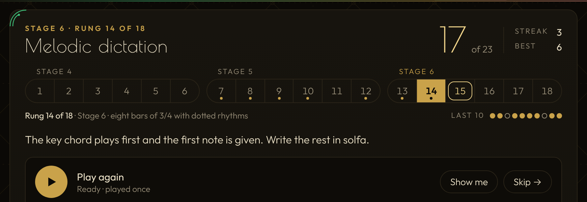
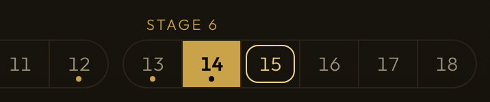
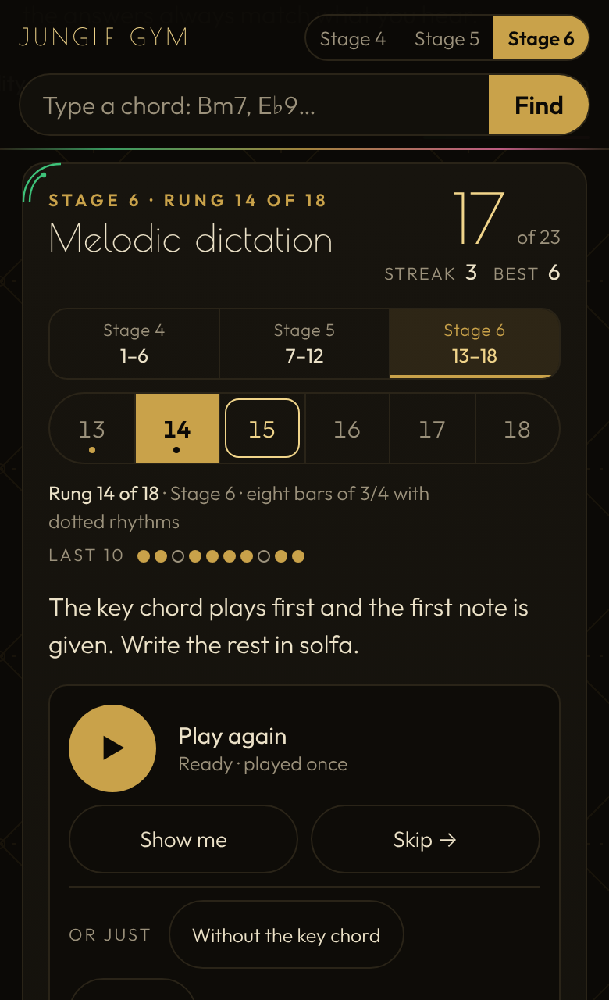
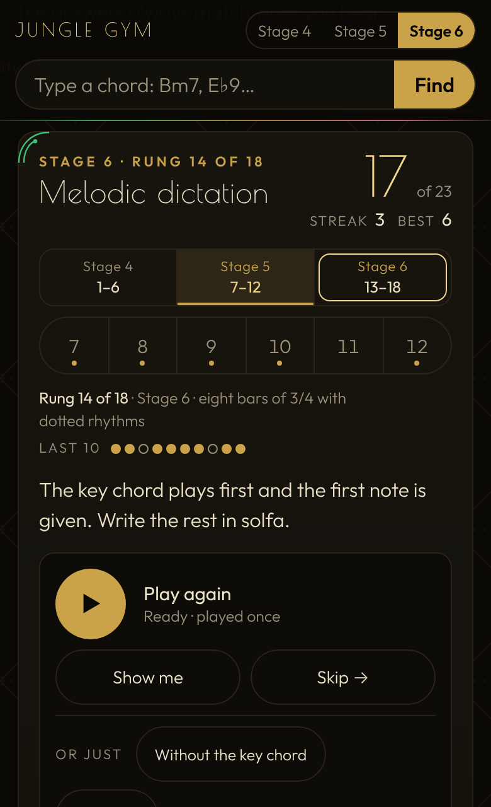
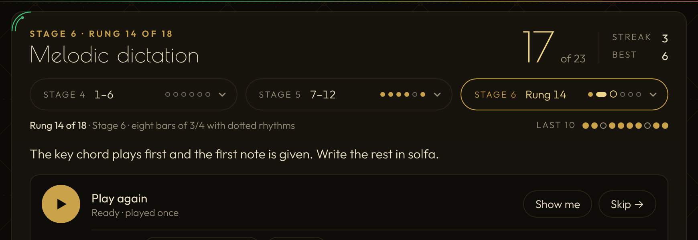
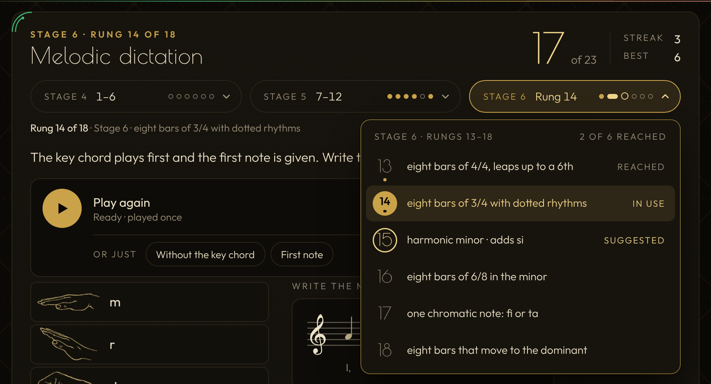
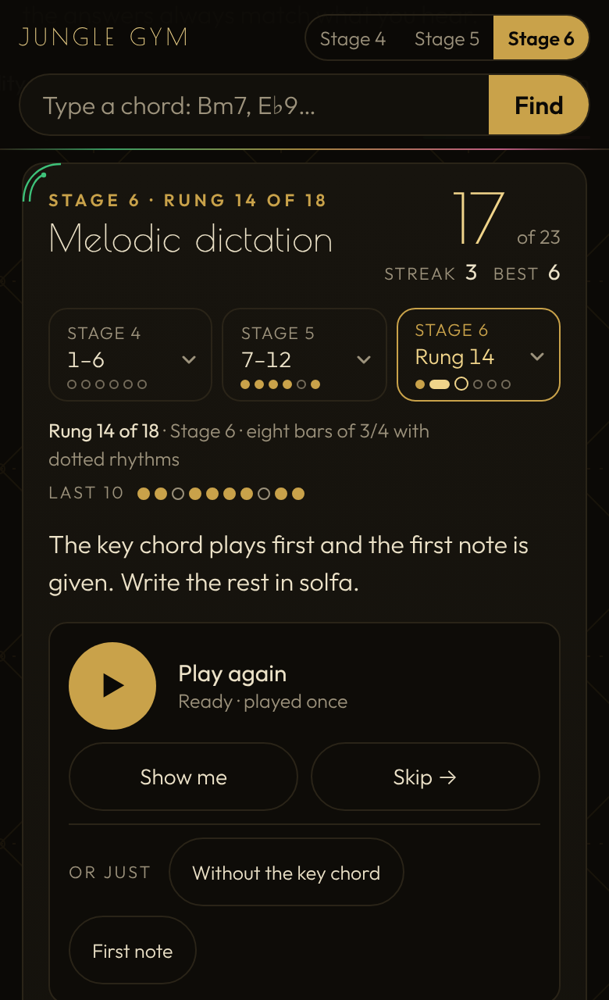
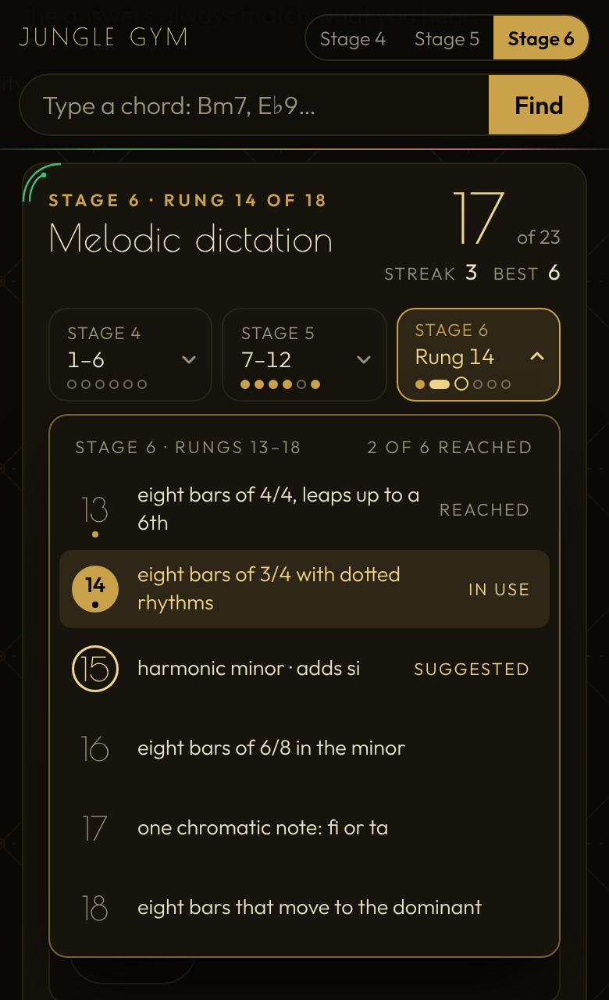

Ear Lab · 0.50 preview · the rung picker at 18 rungs
Two ways to choose from 18 rungs
Same drill, same moment. Melodic dictation, 18 rungs, Stage switch on 6. The student is on rung 14, has reached seven rungs (7–10, 12–14) and rung 15 is suggested.
AOne row, all rungs
All 18 rungs sit in one row on a laptop, in three Stage groups. The Stage name sits above its group.
Every rung shows its marks all the time: a dot for reached, a ring for suggested, gold for the rung in use.
One description is on screen: the chosen rung's, in the line under the row.
On a phone the Stages become three tabs over one row of six rungs.
Laptop · 1366 the row as the card opens

The marks, close up Stage 6 at twice the size

Gold cellThe rung in use. Its Stage name turns gold too.
Dot8 of the last 10 reached on that rung. A record, never a lock.
RingThe rung suggested next. It holds still.
Fit. The row fills the card: 796 px inside at 1366 and 1440 (each rung 43 × 34), 834 px at 1024 (45 × 34). The 0.49 layout, with the Stage name inside each pill, would need about 990 px for 18.
Phone · 390

As the card opens: the tab of the rung in use is open.

After tapping the Stage 5 tab. The ring moves to the Stage 6 tab, where the suggested rung now hides.
Header height
145 laptop · 242 phone
Taps to reach any rung
1 laptop · 1 or 2 phone
On a phone: one tap inside the open Stage, two for a rung in another Stage.
Smallest thing to tap on the phone
54 × 44 px
A rung. The Stage tabs are 108 × 44.
Rung descriptions on screen
1 of 18
The chosen rung's. The others are in each button's spoken label and hover title.
BStage menus
Three Stage buttons. The one in use shows the rung; six small marks on each button show that Stage's rungs.
Tapping a button opens a list of its six rungs, each with its one-line description.
The list uses the same dot and ring as A, and adds the words: reached, in use, suggested.
The open list lies over the top of the question until a rung is chosen or it is closed.
Laptop · 1366 closed, as the card opens

Laptop · 1366, open after one click on Stage 6

Phone · 390

Closed, as the card opens.

Open, after one tap on Stage 6. The list is the width of the card.
Header height
130 laptop · 202 phone
Taps to reach any rung
2 laptop · 2 phone
Open, then choose. The same for the rung next door as for one in another Stage.
Smallest thing to tap on the phone
105 × 60 px
A Stage button. The rows in the list are 314 × 50.
Rung descriptions on screen
6 of 18, when open
Keyboard: Enter or Down opens, arrows move, Home and End, Left and Right change Stage, Esc closes.